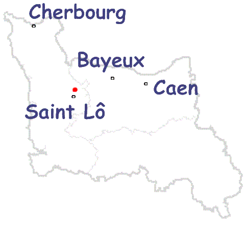
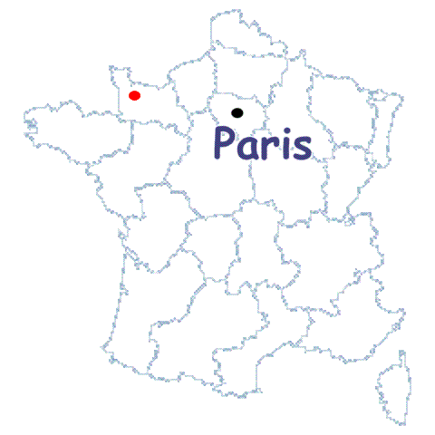

|

|
Vous
l'avez compris, Villiers-Fossard est situé en Basse
Normandie. Et, quelle coïncidence, exactement au niveau
du point rouge de la carte, c'est-à-dire à 6
ou 7 km de Saint-Lô, la préfecture de la
Manche, à 30 km de Bayeux, à 60 km de Caen,
à 80 km de Cherbourg ou à un peu plus de 300
km de Paris.
|

|